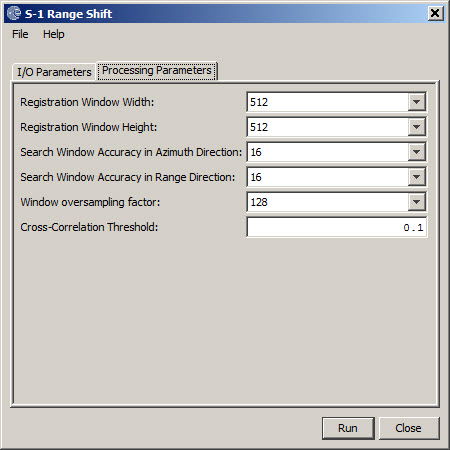

| Range Shift |
|
This operator follows the Backgeocoding
operator in the TOPS InSAR processing chain. It first estimates a
constant range offset for the whole sub-swath of the split S-1 SLC
image using incoherent cross-correlation. The estimation is done for
each burst using a small block of data in the center of the burst. The
estimates from all bursts are then averaged to get the final constant
offset for the whole image.
The operator then performs shift in range
direction for every burst using the offset computed above with a phase
ramp method in frequency domain.

GPT operator: Range-Shift. Generated from the operator source; parameter names are those used in GPT and graph XML.
| Parameter | Type | Default | Allowed values | Unit | Description |
|---|---|---|---|---|---|
fineWinWidthStr | String | 512 | 32, 64, 128, 256, 512, 1024, 2048 | Registration Window Width | |
fineWinHeightStr | String | 512 | 32, 64, 128, 256, 512, 1024, 2048 | Registration Window Height | |
fineWinAccAzimuth | String | 16 | 2, 4, 8, 16, 32, 64 | Search Window Accuracy in Azimuth Direction | |
fineWinAccRange | String | 16 | 2, 4, 8, 16, 32, 64 | Search Window Accuracy in Range Direction | |
fineWinOversampling | String | 128 | 32, 64, 128, 256 | Window oversampling factor | |
xCorrThreshold | double | 0.1 | (0, *) | The peak cross-correlation threshold |